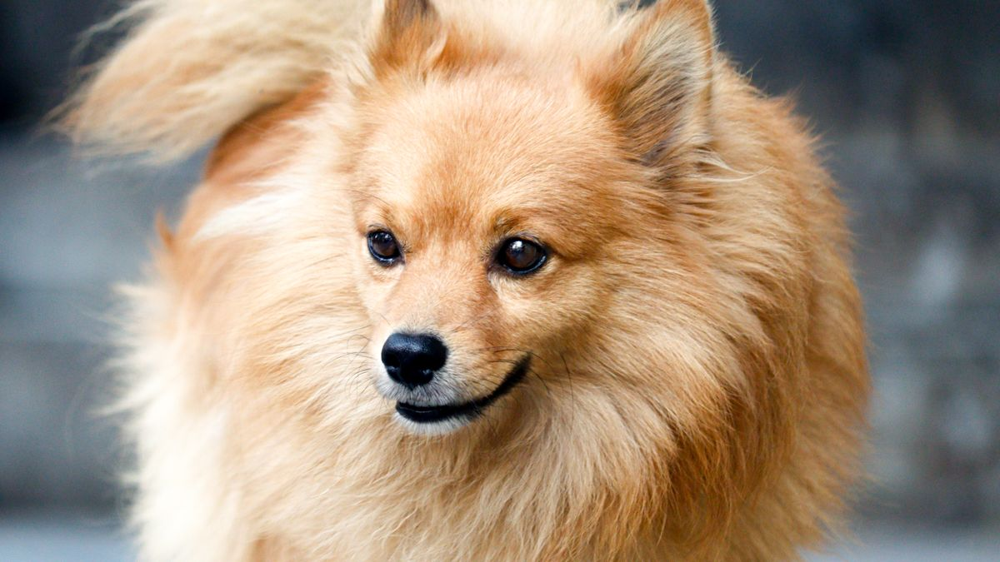

Cắt tỉa lông Phốc sóc (Pomeranian) tại Bình Thạnh: Đẹp form gấu Boo, giữ an toàn cho da
Phốc sóc (Pom) cực kỳ dễ thương khi được tỉa form tròn Boo, nhưng lại là giống chó nhạy cảm bậc nhất với việc cạo tông đơ sát da. Dưới đây là bảng giá 2026 và cách chăm sóc lông Pom chuẩn Groomer.

Câu trả lời ngắn: Giá cắt tỉa lông Phốc sóc (Pomeranian) tại Lumi Pet Bình Thạnh (27 Võ Trường Toản, Phường Gia Định) năm 2026 là 290.000đ (dưới 3kg) và 360.000đ (3–6kg) đã gồm trọn gói tắm vệ sinh, cắt mài móng, vệ sinh tai và vắt tuyến hôi. Tạo kiểu bo tròn Boo cầu kỳ phụ thu 50.000đ – 100.000đ.
1. Bảng giá tắm & cắt tỉa Phốc sóc (Pomeranian) 2026
| Cân nặng Phốc sóc | Tắm vệ sinh | Combo Tắm + Cắt tỉa | Ghi chú |
|---|---|---|---|
| Dưới 3kg (Pom mini/tiny) | 140.000đ | 290.000đ | Đã gồm 10 bước vệ sinh cơ bản |
| 3 – 6kg (Pom tiêu chuẩn) | 190.000đ | 360.000đ | Phụ thu tạo kiểu bo tròn kỹ: 50k–100k |
Trường hợp lông bé bị rối bết vùng sau tai, nách hoặc quá nhiều lông bông tốn thời gian chải sấy, thợ sẽ kiểm tra trực tiếp và báo trước phụ thu gỡ rối (50k–500k) hoặc lông dày (50k–150k) nếu thực tế phát sinh.
2. Cảnh báo quan trọng: Không nên cạo sát da cho Phốc sóc
Phốc sóc là giống dễ gặp tình trạng ngừng mọc lông sau khi cạo sát (Alopecia X / Black Skin Disease). Lưỡi tông đơ đi quá sát da làm tổn thương nang lông vốn nhạy cảm ở giống Pom. Vì vậy tại Lumi Pet:
- Ưu tiên tỉa kéo thủ công hoàn toàn, chừa lại tối thiểu 1,5 – 2cm lớp lông bảo vệ da.
- Sấy tay 100% ở nhiệt độ gió ấm nhẹ kết hợp lược chải phồng để từng sợi lông dựng đứng, giúp đường kéo bo tròn mềm mại không lộ vết cắt.
- Nếu bé đang bị rụng lông mảng hoặc sạm da đen bất thường, tiệm sẽ khuyên ba mẹ đưa bé đi khám bác sĩ thú y kiểm tra nội tiết thay vì chỉ cắt tỉa thẩm mỹ.
3. 3 kiểu cắt tỉa Phốc sóc được ba mẹ chọn nhiều nhất
- Kiểu gấu Boo (Teddy Boo Cut): Bo tròn đầu và thân, giữ độ dài vừa phải để lông vẫn xù mịn và che phủ tốt làn da.
- Kiểu Cáo nhỏ tự nhiên (Fox Trim): Tỉa gọn lông chỉa ở chân, tai, viền bụng và đuôi, giữ nguyên vẻ kiêu sa cổ điển của Phốc sóc.
- Tỉa vệ sinh gọn gàng (Sanitary Trim): Dành cho Pom con đang thay lông sữa — chỉ cạo vệ sinh bàn chân/hậu môn và tỉa nhẹ viền chân để lông trưởng thành mọc đều đẹp.
Xem thêm chi tiết tại trang Cắt tỉa lông chó Phường Gia Định hoặc Grooming Bình Thạnh.
4. Câu hỏi thường gặp
Cắt tỉa lông Phốc sóc 2.5kg tại Lumi Pet Bình Thạnh giá bao nhiêu?
Phốc sóc dưới 3kg có giá combo tắm + cắt tỉa 290.000đ (nếu tạo kiểu bo tròn gấu Boo cầu kỳ, phụ thu thêm 50.000đ – 100.000đ và luôn báo trước).
Phốc sóc mấy tháng tuổi thì nên cắt tỉa tạo kiểu lần đầu?
Nên đợi bé qua giai đoạn thay lông sữa (khoảng 7–8 tháng tuổi trở lên) mới tỉa form toàn thân. Trước đó chỉ nên tắm vệ sinh định kỳ và tỉa gọn lông bàn chân, hậu môn.
Lumi Pet có nhận cạo sát 0mm cho Phốc sóc không?
Groomer Lumi Pet luôn tư vấn tỉa kéo giữ độ dài an toàn để bảo vệ nang lông cho Phốc sóc, hạn chế tối đa việc cạo sát trừ khi bé bị bết tảng nặng hoặc có chỉ định điều trị da từ bác sĩ thú y.
Làm sao giữ lông Phốc sóc không bị bết rối giữa 2 lần đi Spa?
Ba mẹ nên chải nhẹ vùng sau tai, cổ và nách 2–3 lần/tuần bằng lược răng thưa/slicker chuyên dụng và tránh để lông ướt tự khô sau khi đi mưa.
Đặt lịch chăm sóc nhẹ nhàng cho boss tại 27 Võ Trường Toản
Đặt lịch trước giúp tiệm chuẩn bị đúng thợ và khung giờ, tránh để bé chờ lâu. Bảng giá 2026 niêm yết minh bạch theo cân nặng.